一、2025 紀念抗戰勝利 80 周年系列活動
以研討會、圖片展、紀錄片與微電影，銘記歷史、致敬榮光。
為紀念中國人民抗日戰爭暨世界反法西斯戰爭勝利 80 周年，協會以不同的方式開展活動，如研討會、圖片展；並支持抗戰主題紀錄片和微電影，舉行放映會。
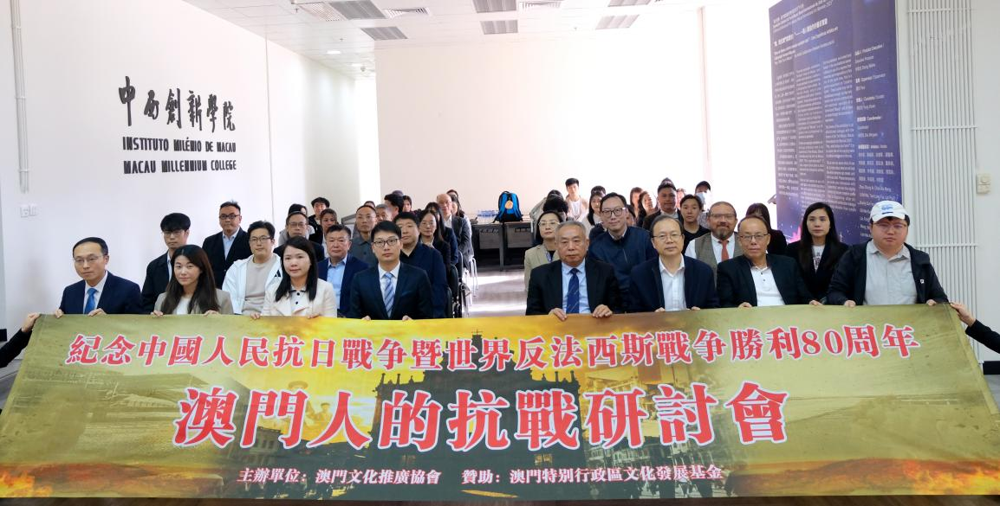
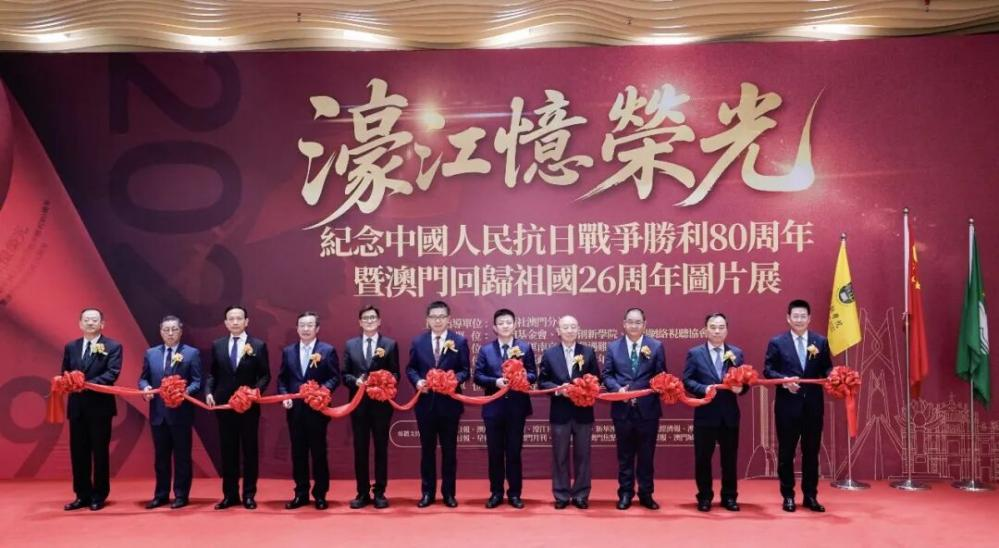
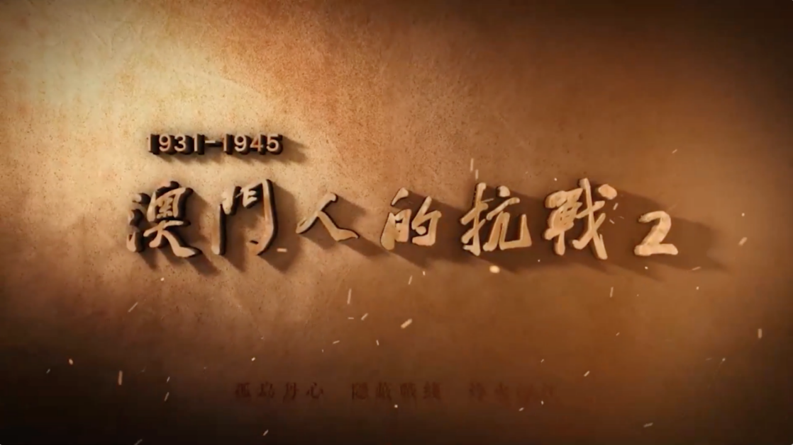
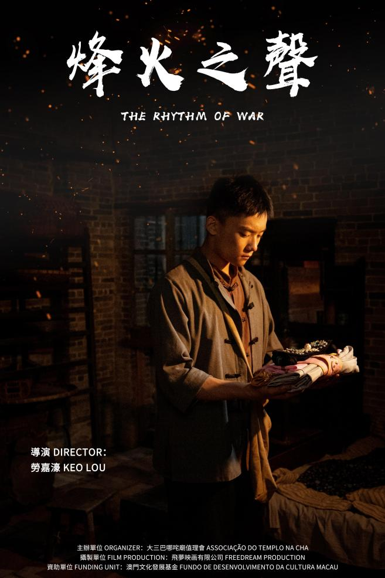
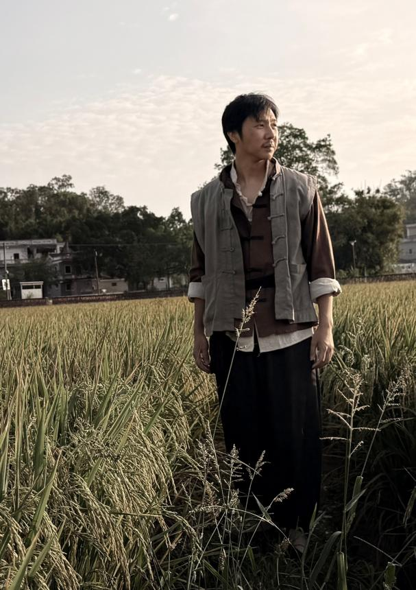
二、第十五屆全運會相關活動
全運會
光影迎全運 · 秒秒都是宣傳片
- 第十五屆全國運動會優秀短視頻大賽
- 共 15 位參賽者分別獲得最佳傳播獎、最佳主題呈現獎、最佳網絡傳播潛力獎、最具創意獎、最佳人氣獎、最佳澳門故事獎和優秀獎
全運會
活力澳門迎十五運 · 隨手拍作品徵集
- 面向公眾徵集「隨手拍」作品，以影像迎接十五運
全運會
澳門心 · 中國夢 · 文化澳門原創音樂徵集
- 2025 年 9 月 30 日啟動，吸引內地、香港及澳門音樂人參與
- 共收到投稿作品近 5,000 首
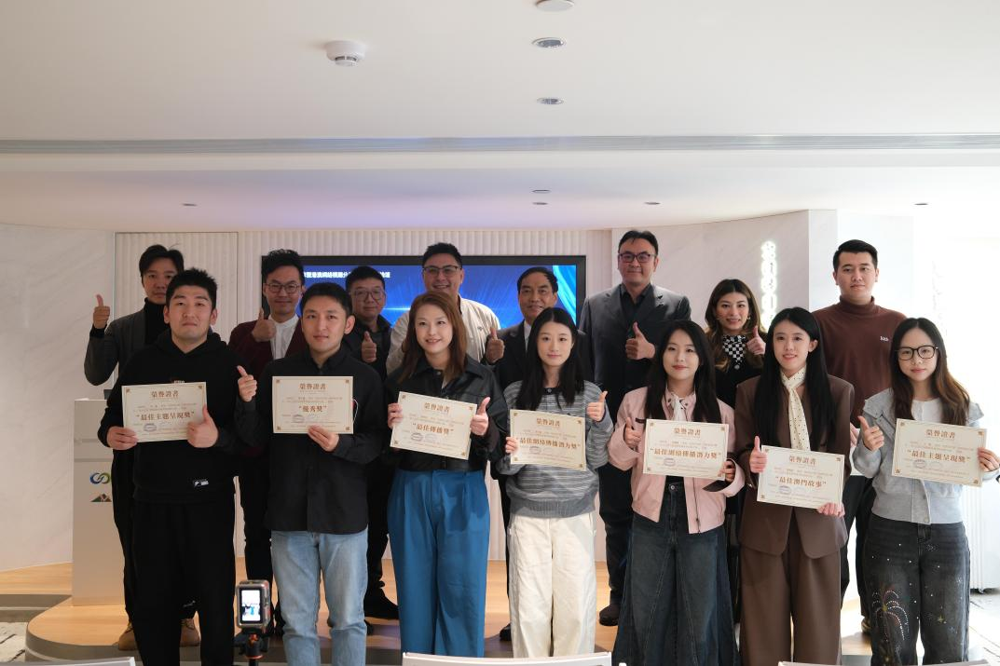
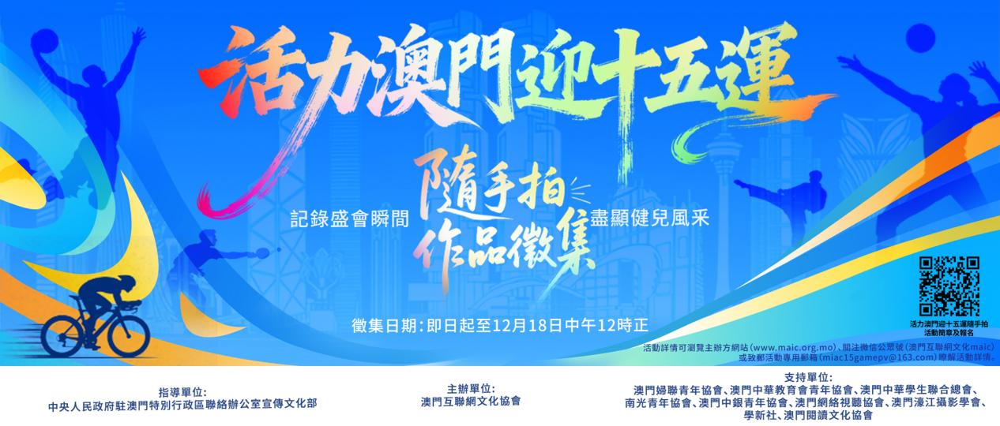
三、國際傳播活動
2025 年 12 月 16 日，由澳門網絡視聽協會國際傳播專委會與澳門中華民族文創學會主辦的「視聽無界 · 融合共生——海峽兩岸暨港澳網絡視聽分享暨出海戰略論壇」在澳門青年孵化中心舉行。論壇匯聚港、澳、台及內地視聽領域代表，共同探討網絡視聽內容的新機遇，並交流出海策略與合作可能。
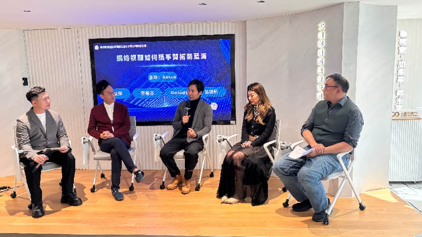
四、線下脫口秀
協會支持的脫口秀《我們能棟篤笑》在 7 月–8 月間於大灣區線下演出 8 場，以輕鬆幽默的語言藝術連結兩岸四地的觀眾。
五、培訓類成果
協會持續推動青年視聽人才培養，組織多期大灣區研修交流。
研修（山西大同）
青年視野 · 中國影像
- 2025 年大灣區青年視聽創作與傳播研修交流
- 參訓：林善智、范肇倫（澳門現代日報）／容美恩（澳廣視）／曾惠鍵（澳門日報）
研修（陝西西安）
大灣區視聽創作青年人才研修班（第 2 期）
- 區世源（副理事長 · 國際傳播專委會主任）
- 麥婉玉（文旅專委會主任）／陳耀祖、蔡佩詩（澳廣視）
- 羅倩婷（澳門日報）／黃曼羚（中國傳媒大學）
研修（廣東廣州）
粵港澳大灣區微短劇內容創作管理高級研修班
- 王笛、魏珂（澳門影視產業發展促進會）
- 戴顯揚、楊婉君、梁穎兒（澳門直播協會）
- 張少君、陳志達（天下國際傳媒）／夏林、李婉晴 等
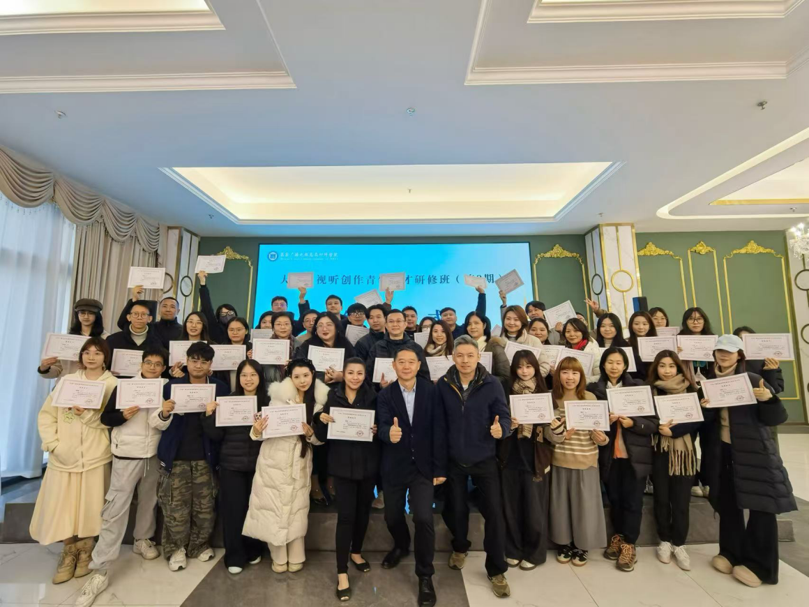
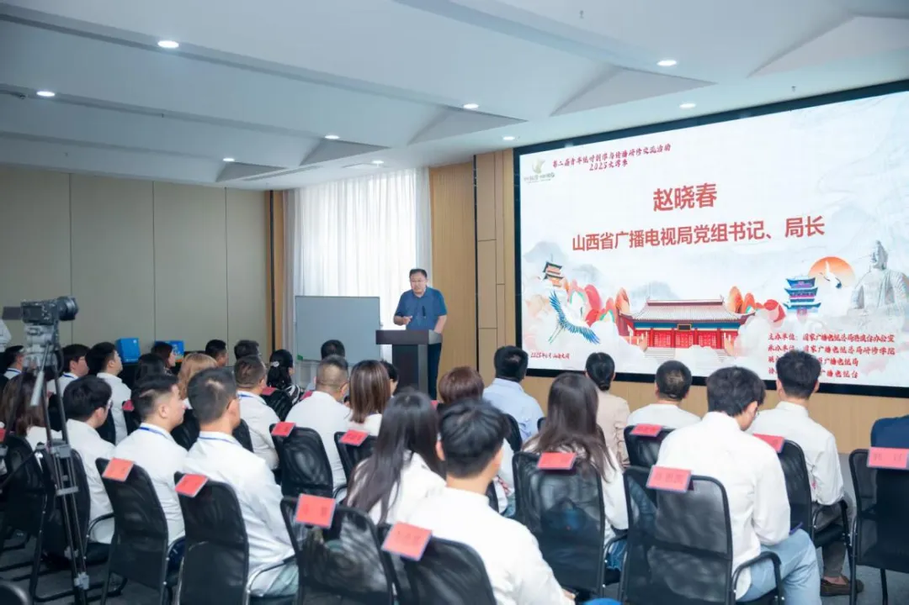
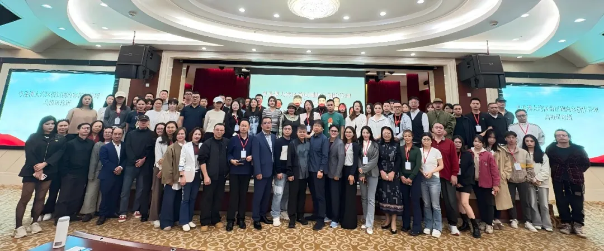
六、其他活動與受邀項目
電影放映
《歡樂旅旅旅》電影篇放映會
- 協會作為支持單位參與放映會
行業大會
弄潮 · 數媒融合創未來
- 2025 紫金網絡傳播創新大會主題分享會
文旅 IP
徒步旅遊熱潮暨徒步熊貓 IP 發佈會
- 協會作為支持單位參與
國安教育
參觀全民國家安全教育展
- 協會代表參觀學習
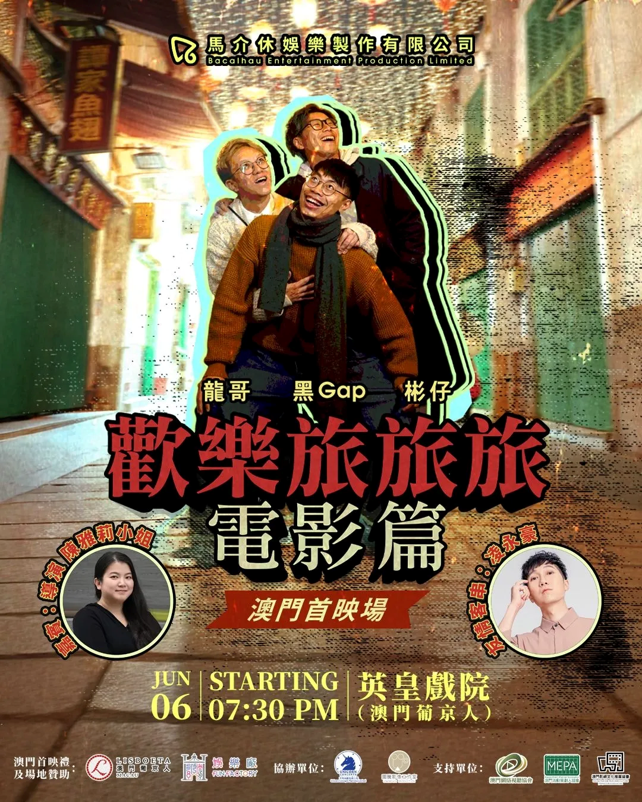
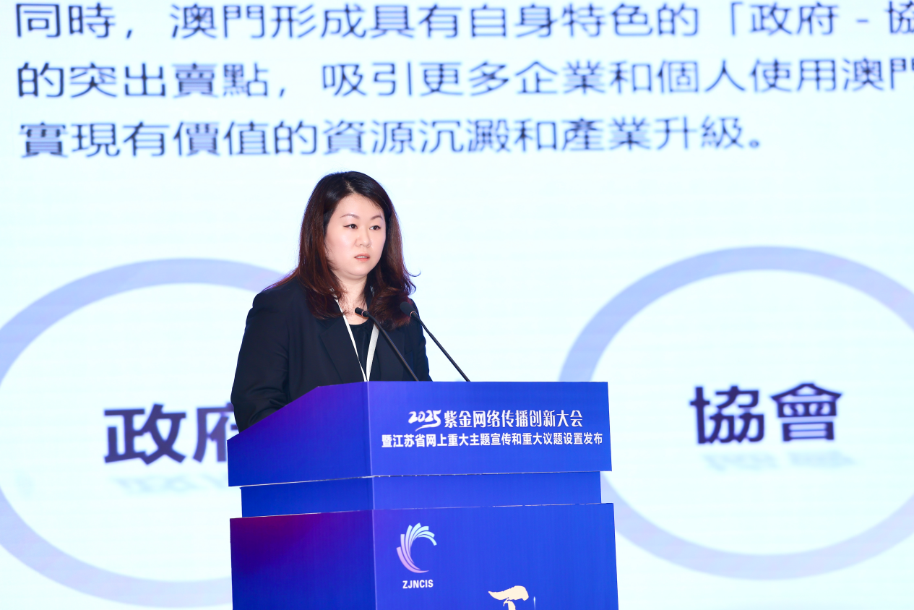
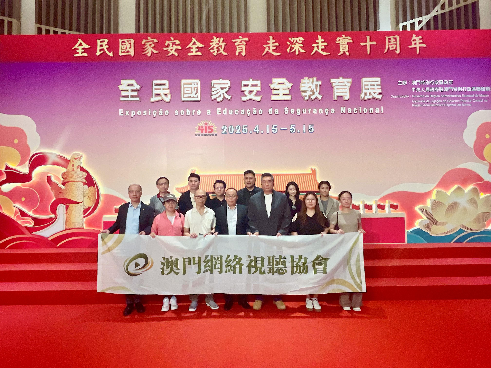
協會的活動與影視實踐、公益行動互為表裡。更多實踐案例，請見「影視實踐」與「網絡·公益」欄目。
前往影視實踐 →